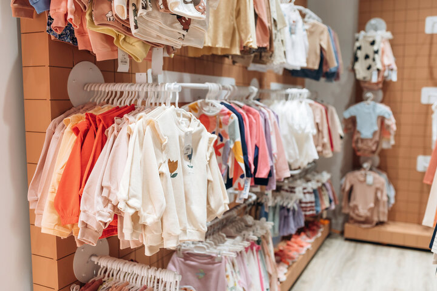
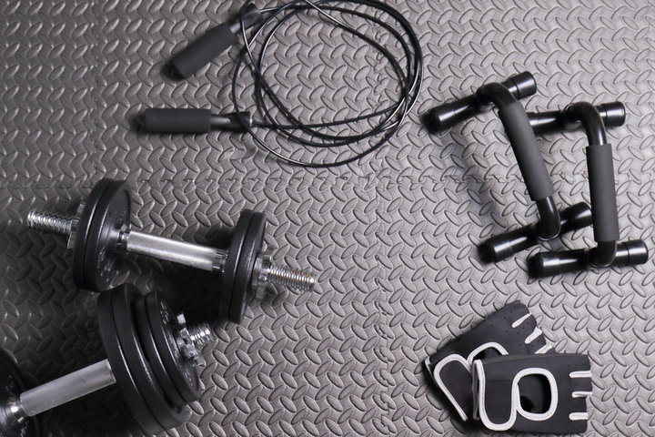
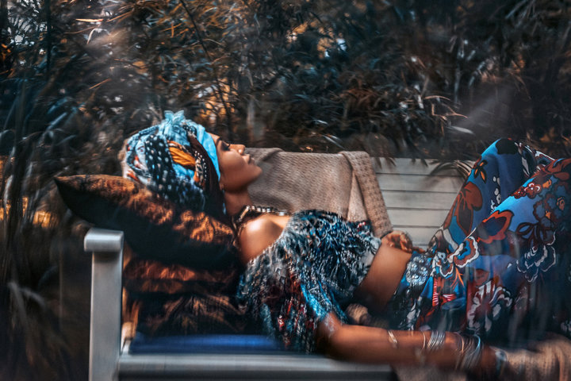
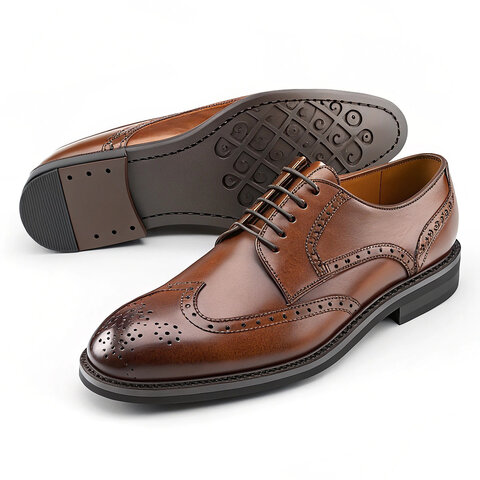

Premium Fashionable Garments
Meticulously crafted jackets, tailored trousers, and designer separates featuring premium fabrics, precision stitching, and contemporary silhouettes that elevate any wardrobe.
Premium Fashion Design Studio & Luxury Accessories
Experience sophisticated bespoke fashion design, curated luxury jewelry, statement accessories, and professional styling consultation from Mars Clothing and Accessories. We create fashion-forward pieces with meticulous craftsmanship for clients who demand quality, elegance, and distinctive personal style.
About Mars Clothing & Accessories
Mars Clothing and Accessories is a premium fashion design studio dedicated to creating sophisticated, fashion-forward garments and accessories. We specialize in bespoke tailoring, contemporary ready-to-wear, and statement jewelry pieces that reflect modern elegance and timeless style.
Our philosophy blends digital audio aesthetics with high-end fashion design, creating collections that are visually striking, impeccably constructed, and designed for individuals who understand that fashion is a form of self-expression. Every piece is crafted with meticulous attention to detail, premium fabrics, and innovative design principles.
From runway-inspired collections to personalized styling consultations, Mars brings luxury fashion and sophisticated accessories to discerning clients who demand quality, style, and substance.


Meet the Founder
Behind Mars Clothing and Accessories is a visionary designer who combines a deep passion for fashion with expertise in digital audio production. This unique blend of creative disciplines brings an innovative, contemporary perspective to every collection and custom piece.
With a keen eye for detail, an understanding of contemporary aesthetics, and a commitment to meticulous craftsmanship, the founder creates garments and accessories that embody sophistication, elegance, and individual expression. Every design is a statement of style and substance.
Bespoke tailoring, premium garments, and luxury accessories crafted with precision and artistic vision.
Creative expertise that influences design aesthetics, bringing rhythm and harmony to visual compositions.
A philosophy of "Less Noise More Style" - creating fashion that speaks volumes through quality and elegance.
Collections

Meticulously crafted jackets, tailored trousers, and designer separates featuring premium fabrics, precision stitching, and contemporary silhouettes that elevate any wardrobe.
Curated jewelry collections, designer accessories, and statement pieces crafted to complement and enhance your personal style with elegance and sophistication.

Exquisite evening wear, designer dresses, and bespoke statement pieces created for special occasions, red carpet moments, and unforgettable celebrations.
Services & Expertise
Mars offers comprehensive fashion design and styling services for individuals and brands seeking luxury, sophistication, and distinctive personal style. From custom bespoke garments to curated accessory collections and professional styling consultation, we deliver fashion-forward solutions with impeccable craftsmanship and attention to detail.
Custom-designed garments crafted from premium fabrics with personalized fittings, detailed sketches, and collaborative design sessions tailored to your unique style vision.
Curated collections of designer jewelry, premium accessories, and statement pieces crafted to elevate and complement your wardrobe with sophistication and elegance.
Expert styling guidance, wardrobe curation, and fashion consultation to develop a cohesive, fashion-forward personal aesthetic that reflects your individual taste and lifestyle.
Creative direction and design support for custom collections, capsule wardrobes, and boutique fashion lines with conceptual guidance and premium execution.